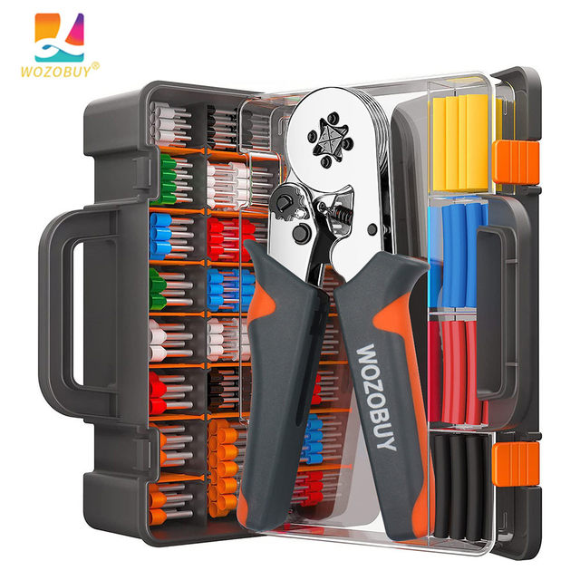
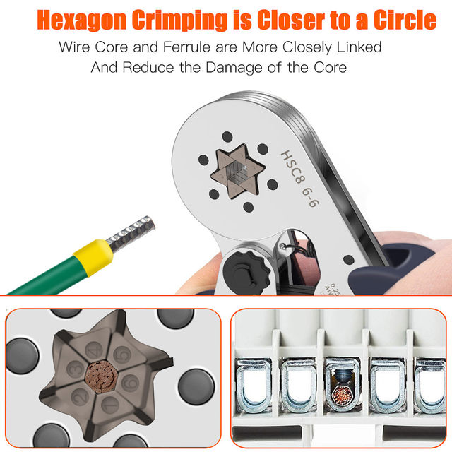
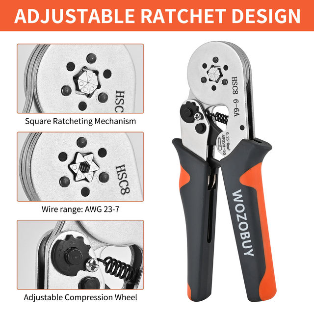
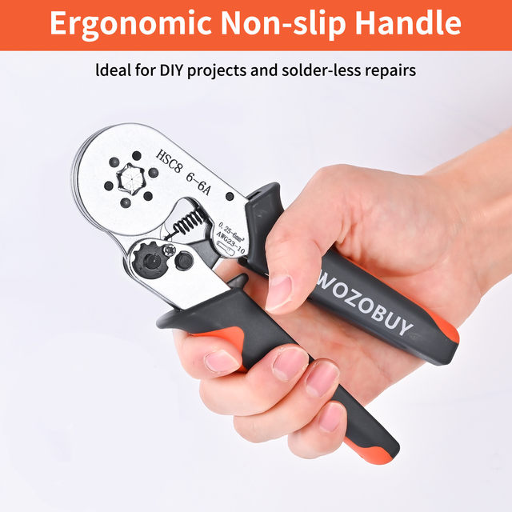

About this item
【High-quality Ferrule Crimping Tool Kit】WOZOBUY specially design for electricians and DIY projects. The Crimper with ferrules, you can reliably press the wire between 23-10AWG 0.25-6mm².
【Ferrules & Ferrule Crimpers】Nice set of crimpers tool with ferrules. There are great selection of wire connectors. The crimping plier set is made of high-hardness precision materials and is durable, lightweight and easy to carry. Cable end-sleeves: 23-10AWG 0.25-6mm².
【Non-slip Comfortable Handle】The crimpers with curved design, classic red and blue color matching two-tone handle. Can be operated with one hand, ergonomic. Exquisite and compact, easy to carry. Fits the palm of your hand, comfortable grip, reduces fatigue from long-time use. Effectively improves work efficiency.
【Tight Crimping】Precise crimping and one-time molding. No damage to wire terminals and no waste of terminals. The crimping pliers are made of alloy steel forging, with pressure adjusting device and ratchet release device, and high toughness spring composition.
【Functional Features】The crimping pliers are electrically conductive, molds equipped with a wide range of overall hand-cranked, easy to use. Apply to general wire with round insulated or non-insulated European terminals, crimped to become a square column.



